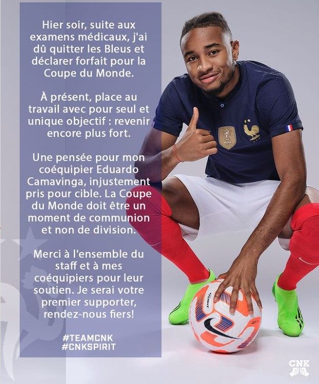

ÚLTIMAS NOTICIAS
Camavinga entra en la lista de Deschamps y se cae Mendy
Siguiente Noticia
El centrocampista del Real Madrid Eduardo Camavinga integra la lista del seleccionador francés,
Didier Deschamps, para disputar el Mundial de Catar, en la que también figura el barcelonista
Ousmane Dembelé.
El jugador madridista, que mañana festeja sus 20 años, integra la nómina de 25 jugadores anunciada
este miércoles por Deschamps, en la que están los clásicos habituales de la lista, como los delanteros
Karim Benzema, Kylian Mbappé y Antoine Griezmann.
El defensor barcelonista Jules Koundé y el centrocampista del Madrid Aurelien Tchouaméni también
están entre los convocados para defender el título logrado por Francia hace cuatro años en Rusia.
Estoy muy contento de participar en este Mundial. Voy a tener la oportunidad de representar
al pueblo francés y haré todo lo posible para que sea feliz", dijo el futbolista del Madrid
en la cadena francesa TF1, la misma en la que Deschamps anunció la lista de convocados.
El seleccionador alabó al Tchouaméni, que definió como un representante de la joven generación
que ha superado un escalón al fichar por un club mítico como el Madrid.

Gardiens de but
AREOLA 27.02.93
Hugo LLORIS 26.12.86
Steve MANDANDA 28.03.85
Défenseurs
Lucas HERNANDEZ
Theo HERNANDEZ
Presnel KIMPEMBE
Ibrahima KONATE
Jules KOUNDE
Benjamin PAVARD
William SALIBA
Dayot UPAMECANO
Raphael VARANE
Miliex de terrain
Eduardo CAMAVINGA
Youssouf FOFANA
Matteo GUENDOUZI
Adrien RABIOT
Aurélien TCHOUAMENI
Jordan VERETOUT
Attaquants
Karim BENZEMA
Kingsley COMAN
Ousmane DEMBELE
Olivier GIROUD
Antoine GRIEZMANN
Kylian MBAPPE
Christopher NKUNKU
Pese a las incertidumbres que pesan sobre algunos de sus jugadores por los problemas físicos,
sobre todo en defensa, Deschamps no ha querido dar más de 25 nombres, aunque podrá hacer una
sustitución si hay una lesión.
Entre los convocados figuran los centrales Raphael Varane y Presnel Kimpembe, que acaban de superar
largas lesiones, mientras que los problemas físicos han dejado fuera al portero del Milan Mike Maignan,
lo que ha abierto la puerta a Steve Mandanda.
En el sector defensivo, Deschamps apuesta por refuerzos jóvenes como Dayot Upamecano, del Baryern,
o William Saliba, del Arsenal además de Koundé, que también acaba de superar una lesión. El barcelonista,
que el próximo sábado festejará sus 24 años, cuanta solo con doce partidos internacionales.
En el centro del campo las lesiones han provocado las ausencias más sonadas, las de Ngolo Kanté
y Paul Pogba, lo que ha abierto la puerta a un Camavinga que, hasta ahora, solía participar más
en la sub-21 y que solo ha vestido cuatro veces la camiseta de la absoluta.
Dos más que el monegasco Youssouf Fofana, de 23 años, otra de las sorpresas de la lista junto al
marsellés Jordan Veretout, de 29 años. En el ataque Deschamps ha apostado de nuevo por Olivier Giroud,
que a sus 36 años vivirá su tercer Mundial, pese a que parecía estar fuera de los planes del seleccionador.
Santi Aldama suma y sigue en la NBA: titular con Memphis y triunfo en la prórroga en San Antonio
Anterior Noticia Siguiente Noticia
Los Memphis Grizzlies (8-4), con el español Santi Aldama como titular una noche más,
ganaron en la prórroga 122-124 a los San Antonio Spurs (5-7) en su visita al AT&T
Center.
El joven ala-pívot español de 2,13 m. y 21 años firmó 7 puntos (2 de 3 en tiros de 2 y
1 de 2 en triples), 7 rebotes, 1 asistencia, 1 robo y 1 tapón en 23 minutos.
Ja Morant y Desmond Bane, uno de los jugadores que más está sorprendiendo esta temporada
en la NBA, lideraron el triunfo de Memphis en San Antonio con 32 puntos cada uno.
Detallazo de Nkunku con Camavinga
Anterior NoticiasEl delantero francés, que se pierde el Mundial, exculpó al centrocampista del Madrid, que se vio envuelto en la acción pero sin ser golpearle.
El delantero de Francia y del RB Leipzig, Christopher Nkunu, publicó una carta en la que
lamenta profundamente haberse quedado fuera del Mundial por una lesión en el entrenamiento
previo a viajar a Qatar. En la misma, es muy cariñoso con el madridista Eduardo Camavinga, involucrado en la jugada en la que se lesiona aunque para desgracia del delantero fue un mal apoyo lo que le produjo la lesión y no la presión de su compañero.
“Ayer por la tarde, después de realizarme unas pruebas, tuve que dejar la concentración de
la selección francesa y fui declarado baja para el Mundial. A partir de ahora, me pongo a
trabajar con un solo y único objetivo: volver todavía más fuerte. Quiero pararme a hablar
de mi compañero Eduardo Camavinga, injustamente insultado por este incidente. El Mundial
debe ser un momento de unión y no de división. Gracias a todo el staff y a mis compañeros
por su apoyo. Seré vuestro primer aficionado, ¡haced que estemos orgullosos!”, dijo Nkunku
La de Nkunku es la segunda baja que tiene Francia desde que dio la lista. Ya antes cayó Kimpembe. En el lugar de ambos han entrado Thuram y Kolo Muani, que este jueves se incorporará a la concentración francesa en Doha. El resto de la expedición llegó en la noche del miércoles después de un viaje de casi 7 horas desde tierras francesas.
